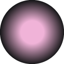
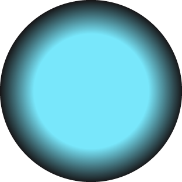
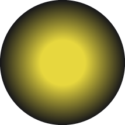

You have arrived at Proxima Centauri, the closest start to our sun at about 25 trillion miles away. It takes light about 4.2 years to travel from the Sun to Proxima Centauri. How long would it take humans to get there, you wonder? Even travelling at the fastest a human being has ever travelled (about 25,000 mph), it would take about 113,836 years to get there. Proxima Centauri is home to a planet called Proxima Centauri b, which scientists believe may harbor liquid water, and thus, life. Scientists are currently observing Proxima Centauri b for signs of life. Stay tuned…
You have arrived at Sirius, the biggest star that we see when we look up at night. Nicknamed the “dog star,” Sirius is located in the constellation of Canis Major (“Great Dog”). Sirius is both close to the Sun (at 8.6 lightyears away), and is extremely luminous. In fact, Sirius appears blue-white in the night sky for a reason. Stars with the highest temperatures and luminosity glow blue, while stars with the lowest temperatures and luminosity glow red. Proxima Centauri, to the right, is what we call a “red dwarf” because it is tiny and not very bright. We can’t see Proxima Centauri in the night sky, but there are other ways we can study it.

Proxima Centauri

Sirius

Sun